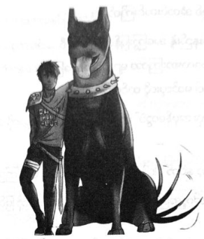

သစ်ပင်အား ခွေးဖြင့် ဝင်တိုက်ခြင်း
မစ္စအိုလာရီမှာ ပါစီကို အရင်မြင်ခဲ့ပြီး အမှိုက်သိမ်းကားခန့် ကြီးသော ခန္ဓာကိုယ်နှင့် သူ မမြင်အောင် နေနိုင် သည်မှာ တော်ရုံအရည်အချင်း မဟုတ်။ ကွင်းထဲ ဝင်မိရုံနှင့် အနက်ရောင် နံရံကြီးပမာ ပါစီ့ကို ပြေးဝင်တိုက်မိသည်။
“ဝုတ် … ဝုတ် …”
ထိုတစ်ခဏတွင် ပါစီ မြေပေါ် ပက်လက်လဲကျသွားပြီး ခြေထောက်တစ်ချောင်းက ရင်ဘတ်ကို ဖိကာ လျှာကြီး က မျက်နှာအား လျက်တော့သည်။ မိနစ် အတန်ငယ်ကြာမှ ပါစီ့အပေါ်က ဖယ်သွားပြီး ထိုအချိန်တွင် ခွေးသွားရည်များ တစ်ကိုယ်လုံး ရွှဲရွှဲစိုနေပြီ ဖြစ်သည်။ ကြေးဝါဒိုင်းတစ်ခုကို ယူကာ ပစ်ပေးပြီး ကစားနေမိ၏။
မစ္စအိုလာရီမှာ ကမ္ဘာပေါ်တွင် တစ်ကောင်တည်းသော ယဉ်ပါးနေသည့် ငရဲခွေးကြီးဖြစ်ပြီး ယခင်ပိုင်ရှင် သေဆုံး ချိန်တွင် ပါစီ အမွေရခဲ့ခြင်း ဖြစ်သည်။ သင်တန်း၌နေပြီး ပါစီ မရှိသည့်အချိန်တွင် မစ္စအိုလာရီကို ဘက်ကင်ဒေါ့ဖ်က တာဝန်ယူ ကြည့်ရှုပေးလေ့ရှိ၏။ မစ္စအိုလာရီ အလွန်သဘောကျသည့် ကြေးဝါအရိုးကြီးကို ဝါးရန် သွန်းလုပ်ပေးထားပြီး ခွေးလည်ပတ်ကိုပါ လုပ်ပေးခဲ့၏။ ပါစီ ပြီးလျှင် မစ္စ အိုလာရီ အခင်ဆုံးသူမှာ ဘက်ကင်ဒေါ့ဖ်ပင်။
ထိုအတွေးက ပါစီကို စိတ်ဆင်းရဲစေသော်လည်း မစ္စအိုလာရီ ကစားချင်သေးသဖြင့် ဒိုင်းကိုပစ်၍ ကစားပေးနေရ ပြန်သည်။ ထို့နောက် အမြောက်ပစ်သံ ထက်ပင် ကျယ်ဦးမည့်အသံဖြင့် တဝုတ်ဝုတ် ဟောင်ရင်း လမ်းလျှောက်ရန် လိုအပ် ကြောင်း သတိပေးပြန်သည်။ ဓားသိုင်းလေ့ကျင့်ရေးကွင်း၏ ခြံဝင်းတံခါးအား ဖွင့်ပေးလိုက်လျှင် မစ္စအိုလာရီမှာ တောအုပ် ဆီ ဦးတည်သွား၏။
နောက်မှ ပါစီ ခပ်မှန်မှန် ပြေးလိုက်ခဲ့ပြီး ရှေ့မှသွားနှင့်သော သူ့ခွေးကြီး အတွက် စိတ်မပူမိ။ တောအုပ်ထဲတွင် မစ္စအိုလာရီကို အန္တရာယ်ပေးနိုင်သော သတ္တဝါ မရှိဘဲ နဂါးနှင့် ကင်းမြီးကောက်ကြီးများကပင် သူ့ကို ရှောင်ပြေးလေ့ ရှိကြ သည်။ မကြာမီအချိန်က ဂရိုဗာ တရားရင်ဆိုင်ခဲ့ရသော ကလိုဗန်ကောင်စီကွင်း ပြင်သို့ ရောက်လာခဲ့သည်။ မြက်များ ဝါထိန်နေပြီး ကွက်လပ်မှာ သပ်ရပ်မှုမရှိတော့။ သို့သော် အံ့ဩစရာ ကောင်းသည်က ကွင်းအလယ်တွင် ဘာမှ မသက်ဆိုင်သူ သုံးဦးကို တွေ့ရခြင်းဖြစ်ပြီး သစ်ပင်နတ်သမီး ဂျူနီပါ၊ နီကို ဒီအန်ဂျလိုနှင့် အလွန်အိုကာ အလွန်ဝသော ဆေတာ တစ်ယောက်တို့ ရပ်နေကြသည်။
မစ္စအိုလာရီကို မြင်ရလျှင် မကြောက်သူ ဟူ၍ နီကိုသာ ရှိ၏။ အိပ်မက်ထဲတွင် တွေ့ရသည့် ပုံစံအတိုင်း အနက်ရောင် ဂျင်းဘောင်းဘီ၊ ကနေသော အရိုးစုပုံ တီရှပ်နှင့် ဖြစ်ပြီး ခါးတွင် စတစ်ဂျီယန် သံဓားကို ချိတ်ဆွဲထားသည်။ အသက် ဆယ့်နှစ်နှစ်သာ ရှိသေးသော်လည်း ထို့ထက်ပို၍ အသက်ကြီးသည်ဟု ထင်ရ၏။
ပါစီ့ကို မြင်လျှင် ခေါင်းညိတ် နှုတ်ဆက်ပြီး မစ္စအိုလာရီ၏ နားရွက်များကို ဆက်၍ ပွတ်သပ်ပေးနေ၏။ နီကို့ ခြေထောက်ကို အနံ့ခံကာ မစ္စအိုလာရီ အလွန် စိတ်ဝင်စားနေပြီး ဟေးဒီးစ်၏ သားမှာ ငရဲခွေးများ စိတ်ဝင်စားသည့် နေရာ များစွာကို ခရီးသွားခဲ့ပုံရ၏။ ဆေတာအိုကြီးမှာမူ သဘောကျပုံမရ။
“ငါ့တောအုပ်ထဲမှာ ငရဲပြည်က သတ္တဝါက ဘာလာလုပ်နေတာလဲ …”
ဆေတာအဘိုးကြီးမှာ လက်များဝှေ့ယမ်း ကန့်ကွက်ကာ ခြေဆောင့်ရင်း …
“ပါစီဂျက်ဆန် … ဒါမင်းရဲ့ ခွေးလား …”
“ဆောရီးပဲ လီနီယပ်စ် … ခင်ဗျားရဲ့ ခွေးပဲဖြစ်မယ်”
“မင်းက ကောင်စီအဖွဲ့ဝင်ကိုတောင် မေ့နေပြီလား … မင်းခွေး မင်း ပြန်ခေါ်သွား …”
မစ္စအိုလာရီမှာ ပျော်ရွှင်စွာဖြင့် တဝုတ်ဝုတ် ဟောင်နေသည်။ လီနီယပ်စ် တံတွေးတစ်ချက်မျိုရင်း စိတ်လှုပ်ရှားစွာ ဖြင့် …
“မောင်းထုတ်လိုက် ဂျူနီပါ … ဒီပုံစံနဲ့ နင့်ကို ငါ မကူညီနိုင်ဘူး …”
ပါစီ့ကို ဂျူနီပါ လှမ်းကြည့်လိုက်သည်။ ဂျူနီပါမှာ သစ်ပင်နတ်သမီးများထဲတွင် သူ့နည်းနှင့်သူ လှပသူ ဖြစ်ပြီး ယခုအခါ ငိုထားသဖြင့် မျက်လုံးများ စိမ်းနေ၏။
“ဂရိုဗာအကြောင်း မေးနေတာ ပါစီ … တစ်ခုခု ဖြစ်နေပြီ … သူ ပြဿနာ မတက်ရင် ဒီလောက် အကြာကြီး ပျောက်နေမှာ မဟုတ်ဘူး … လီနီယပ်စ်ကို ပြောနေတာ ...”
“ငါ ပြောတယ် … အဲဒီ သစ္စာဖောက်ကို ဂရုမစိုက်နေနဲ့လို့ …”
ခြေဆောင့်ရင်း ဂျူနီပါက ပြန်ပြောလိုက်သည်။
“သူက သစ္စာဖောက်မှ မဟုတ်တာ … သူက သတ္တိအရှိဆုံး ဆေတာ … သူ ဘယ်ရောက်နေလဲ သိချင်တာ …”
“ဝုတ် …”
ခွေးဟောင်သံ ကြားလျှင် လီနီယပ်စ်မှာ ဒူးများပင် တုန်လာ၏။
“ငရဲခွေးနားမှာ ဘာမှ ငါ မဖြေနိုင်ဘူး …”
နီကို့ပုံစံမှာ မရယ်မိစေရန် ထိန်းနေရပုံ ပေါ်သည်။
“ငါပဲ ခွေးကျောင်းလိုက်ပါ့မယ် …”
နီကို လေချွန်လိုက်လျှင် မစ္စအိုလာရီမှာ သူ့နောက်မှ ခုန်ပေါက်ရင်း လိုက်ပါ သွားတော့သည်။
“ငါ ပြောနေတယ်လေ ကောင်မလေးရဲ့ … နင့်ရည်းစားက သူ့ကို နှင်ထုတ်ပြီး ကတည်းက ဘာသတင်းမှ မပို့ တော့ဘူးလို့ …”
“နှင်ထုတ်ဖို့ ကြိုးစားခဲ့တယ် လုပ်ပါ … ခိုင်ရွန်နဲ့ ဒိုင်အိုနစ်ဆပ်စ်က သဘော မတူဘူးလေ …” ဟု ပါစီ သတိပေး လိုက်သည်။
“သူတို့က ကောင်စီထဲမှာ ဟန်ပြပဲ ပါကြတာ … သူတို့ မဲပေးတာကို အတည် မယူနိုင်ဘူး …”
“ခင်ဗျား ပြောတဲ့အတိုင်း ဒိုင်အိုနစ်ဆပ်စ်ကို ပြန်ပြောပေးပါ့မယ် … စိတ်ချ”
လီနီယပ်စ်မျက်နှာ သွေးဆုတ်ဖြူရော်သွားရင်း …
“ငါ … ငါ … ဂျက်ဆန် … ဒါက မင်းကိစ္စ မဟုတ်ဘူး….”
“ဂရိုဗာက ငါ့သူငယ်ချင်း … ‘ပန်’ သေပြီဆိုတာ သူ ညာနေတာ မဟုတ်ဘူး … ငါ ကိုယ်တိုင်ကို မြင်ခဲ့ရတာ … ခင်ဗျားတို့သာ အမှန်တရားကို လက်ခံဖို့ အရမ်း ကြောက်နေကြတာ …”
လီနီယပ်စ်၏ နှုတ်ခမ်းများ တုန်လာကြသည်။
“ဂရိုဗာ ညာနေတာ … သူ ထွက်သွားတာ အကောင်းဆုံးပဲ …”
ဝါကျင့်နေသော မြက်ပင်များကို ပါစီပြရင်း ……
“အခြေအနေကောင်းနေရင် ခင်ဗျားမိတ်ဆွေတွေ ဘာလို့ မရှိတော့တာလဲ … ကောင်စီကော ရှိသေးရဲ့လား …”
“မာရွန်နဲ့ ဆီလီနပ်စ် … သူတို့ … သူတို့ ပြန်လာကြမှာပါ … ခဏနားနေတာ နေလိမ့်မယ် … အချိန်ကာလကလည်း မငြိမ်မသက်နဲ့”
“ပိုဆိုးလာဖို့ပဲ ရှိတယ် … လီနီယပ်စ် … သင်တန်းအတွက် ဂရိုဗာရှိဖို့ လိုတယ် … သူ့ကို မှော်ပညာသုံးပြီး မရှာ နိုင်ဘူးလား …”
“ငါ မသိဘူးလို့ ပြောပြီးပြီလေ … သေပြီ ထင်တယ်”
ဂျူနီပါ့ဆီမှ ငိုသံသဲ့သဲ့ ထွက်လာ၏။
“သူ မသေသေးဘူး … အဲလောက်တော့ ငါ သိပါတယ် …”
လီနီယပ်စ်က မကျေမချမ်းနှင့် …
“စိတ်ချင်းဆက်နေတဲ့ ကိစ္စလား … လုံးဝ စိတ်ချလို့မရဘူး”
“ဘာသတင်းမှ မရလည်း စုံစမ်းလေ … ဂရိုဗာကို တွေ့အောင်ရှာ … စစ်ပွဲက အရမ်းနီးနေပြီ … ဂရိုဗာက သဘာဝ ဝိညာဉ်တွေကို လိုက်စုဆောင်းနေတာ”
ပါစီ အလျော့မပေးဘဲ ဆက်ပြော၏။
“ငါ့ခွင့်ပြုချက် မပါဘဲ လိုက်လူစုနေတာ … ပြီးတော့ ဒီစစ်ပွဲက ငါတို့နဲ့ ဘာဆိုင်သလဲ”
လီနီယပ်စ်၏ ရှပ်အင်္ကျီအား ပါစီ လှမ်းဆွဲလိုက်သည်။ ထိုသို့ ပေါက်ကွဲလေ့ မရှိသော်လည်း ဆိတ်အိုကြီးကြောင့် ပါစီ ဒေါသအလွန်ထွက်နေပြီ ဖြစ်သည်။
“သေချာနားထောင် လီနီယပ်စ် … ခရိုနော့စ် စစ်ပွဲစပြီ ဆိုတာနဲ့ ငရဲခွေးတွေ အများကြီး ပါလာလိမ့်မယ်… လမ်းတစ်လျှောက်မှာ ရှိရှိသမျှ အားလုံးကို ဖျက်ဆီးပစ်လိမ့်မယ် … လူသော၊ နတ်သော ဘာမှ ချန်မယ် မထင်နဲ့ … ဆေတာတွေ ကိုပဲ လွတ်ငြိမ်းချမ်းသာခွင့် ပေးမယ်ထင်လို့လား … ခင်ဗျားက ဆေတာ ခေါင်းဆောင် မဟုတ်လား … ဒါဆို ဦးဆောင်တော့လေ … ဒီနေရာက အပြင်ထွက်ကြည့် … ဂရိုဗာ ကို သွားရှာ … သွား … သွားတော့”
အားနှင့် ပါစီ မတွန်းသည့်တိုင် လီနီယပ်စ် ဖင်ထိုင် လဲကျသွားပြီးနောက် ကမန်းကတန်း ပြန်ထကာ ထွက်ပြေး သွားတော့သည်။
“ဂရိုဗာကို ဘယ်တော့မှ ပြန်လက်မခံနိုင်ဘူး … အပြင်မှာ သေမှာပဲ …” ဟု ပြောရင်း တောအုပ်ထဲ ဝင်ရောက် ပျောက်ကွယ်သွား၏။
မျက်ရည်များသုတ်ရင်း ဂျူနီပါက …
“ဆောရီးပဲ ပါစီ … နင် ဝင်ပါလိုက်ရတာ ငါ စိတ်မကောင်းပါဘူး … လီနီယပ်စ် က တောရိုင်းမြေရဲ့ အရှင်သခင် ဘွဲ့ကို ယူထားတုန်းပဲ … သူနဲ့ နင် ရန်မဖြစ်သင့်ဘူး”
“ခေါက်ထားလိုက်ပါ … အဝလွန်နေတဲ့ ဆိတ်အိုကြီးထက် ပိုဆိုးတဲ့ ရန်သူတွေ ငါ့မှာ ပုံလို့ ...”
အနီးသို့ နီကို ပြန်ရောက်လာသည်။
“ပါစီ … တော်တယ် … ဆိတ်ခြေရာတွေ ကြည့်ရတာ မင်းကို တော်တော် ကြောက်သွားပုံပဲ …”
နီကို ရောက်လာသည့် အကြောင်းရင်းကို ပါစီ သိနေသည့်တိုင် ကြိုးစား၍ ပြုံးပြလိုက်သည်။
“နီကို … ဂျူနီပါနဲ့ လာတွေ့တာလား”
နီကို့မျက်နှာ နီရဲသွားရင်း …
“မဟုတ်ဘူး … တိုက်ဆိုင်သွားတာ … သူတို့စကားပြောနေတဲ့ နေရာမှာမှ ငါ ထွက်လာမိတာ ….”
“ငါဖြင့် လန့်လို့ သေတော့မယ် … အရိပ်ထဲက ဝုန်းခနဲ ထွက်လာတာ … နီကို… နင်က ဟေးဒီးစ်ရဲ့ သားပဲ… ဂရိုဗာ့ သတင်းကို မကြားမိဘူးလား …”
ဂျူနီပါ မေးလျှင် နီကို စိတ်မသက်သာဟန်ဖြင့် …
“ဂျူနီပါ … ငါ ပြောပြဖူးတယ်လေ … ဂရိုဗာ သေသွားခဲ့ရင်တောင် သူက သဘာဝထဲမှာပဲ ပြန်ဝင်စားမှာ … အဲလို ဟာတွေ ငါ မသိနိုင်ဘူး… သာမန်လူတွေရဲ့ ဝိညာဉ်ပဲ ငါ သိတာ”
“သတင်းလေး ဘာလေးတောင် မကြားမိဘူးလား”
“ငါ နားစွင့် ထားပါ့မယ် …”
“သူ့ကို ရှာတွေ့မှာပါ ဂျူနီပါ … ဂရိုဗာ မသေသေးပါဘူး … သေချာတယ် … ငါတို့ကို မဆက်သွယ်နိုင်တာ အကြောင်း တစ်ခုခုတော့ ရှိရမယ်”
စိတ်ပျက်လက်ပျက်နှင့် ဂျူနီပါ ခေါင်းညိတ်လိုက်သည်။
“ဒီတော့အုပ်ထဲကနေ အပြင်ကို ငါ ထွက်လို့မရဘူး … သူ ဘယ်ရောက်နေမှန်း မသိဘူး … စောင့်နေရုံပဲ တတ်နိုင် တယ် … သူသာ တစ်ခုခုဖြစ်သွားရင် …”
ခုန်ပေါက်လျက် မစ္စအိုလာရီ ပြန်ရောက်လာပြီး ဂျူနီပါ၏ အဝတ်အစားများကို စိတ်ဝင်စားသွား၏။
“မလုပ်နဲ့ … ခွေးနဲ့ သစ်ပင်တွေ့ရင် ဘာဖြစ်သလဲ ငါ သိတယ် … သွားပြီ”
အော်ရင်း ဟစ်ရင်း အစိမ်းရောင် မီးခိုးများ ဖြစ်ကာ ဂျူနီပါ ပျောက်ကွယ်သွားသည်။ စိတ်ပျက်လက်ပျက် ဖြစ်သွားသော်လည်း မစ္စအိုလာရီမှာ နောက်ထပ် တစ်ခုခုကို ကစားရန် ထွက်သွားပြီး ပါစီနှင့် နီကိုသာ ကျန်ရစ်ခဲ့သည်။
“ဘတ်ကင်ဒေါ့ဖ် အကြောင်း ကြားရတာ စိတ်မကောင်းပါဘူး …”
“မင်း ဘယ်က ကြားခဲ့တာလဲ …”
“သူ့ ဝိညာဉ်နဲ့ တွေ့ ခဲ့ပြီးပြီ”
“အင်း … ဟုတ်သားပဲ … သူ ဘာပြောသေးလဲ”
ဆယ့်နှစ်နှစ်အရွယ် ကောင်လေးမှာ လူများထက်စာလျှင် ဝိညာဉ်များနှင့် ပိုရင်းနှီးကြောင်း ပါစီ မေ့နေတတ်သည်။
“မင်းကို သူ အပြစ်မတင်ပါဘူး … အပြစ်မကင်းသလိုလည်း မဖြစ်ပါနဲ့ ပြောလိုက်သေးတယ် …”
“လူပြန်ဝင်စားဖို့ လုပ်မယ်တဲ့လား …”
နီကို ခေါင်းခါပြလိုက်သည်။
“သုခဘုံမှာ ဆက်နေရင်း တစ်ယောက်ယောက်ကို စောင့်မယ်လို့ ပြောတယ် … ဘာပြောချင်တာလဲ ငါတော့ နားမလည်ဘူး… သူ့ပုံစံကြည့်ရတာ သေသွားတဲ့ ကိစ္စအပေါ် သိပ်ခံစားရပုံတော့ မရှိပါဘူး …”
ထိုသတင်းက အနည်းငယ် စိတ်သက်သာရာရစေ၏။
“တိုက်တန်တွေရှိတဲ့ တောင်ထိပ်ပေါ်မှာ မင်းကို ငါ မြင်မိတယ် … အိပ်မက်ထဲမှာ … အဲဒါက …”
“တကယ်သွားခဲ့တာ … သူတို့ကို ချောင်းဖို့ မရည်ရွယ်ပါဘူး … ဒါပေမဲ့ ငါနဲ့ နီးနေတော့ ..”
“မင်းက အဲဒီနားမှာ ဘာလုပ်နေတာလဲ …”
“ငါ့မိသားစုအကြောင်း လိုက်စုံစမ်းနေတာ”
ပါစီ ခေါင်းညိတ်လိုက်သည်။ နီကို့ အတိတ်ဇာတ်လမ်းမှာ နာကျင်စရာများစွာ ရှိနေပြီး လွန်ခဲ့သောနှစ်နှစ် ကထိ သူနှင့် အစ်မဖြစ်သူ ဘီရန်ကာတို့မှာ ကြာပန်းဟိုတယ်ထဲတွင် ပိတ်မိကာ ထိုအထဲတွင် အချိန်မှာ ရပ်တန့်လျက် ရှိသည်။ ပြင်ပက အချိန်နှင့် တွက်ဆပါက နှစ်ခုနစ်ဆယ်ခန့်ထိ နေခဲ့ရပြီးမှ ထူးဆန်းသော ရှေ့နေတစ်ယောက် က သူတို့ကို ကယ်တင်ကာ ကျောင်းသို့ ပို့ပေးခဲ့သည်။ ဟိုတယ်ထဲ မရောက်ခင်က သူ့ဘဝအကြောင်းကို နီကို လုံးဝမမှတ်မိ။ သူ့အမေ အကြောင်း မသိသလို လာခေါ်သော ရှေ့နေအကြောင်းလည်း မသိ။ ဘာကြောင့် အချိန် ရပ်တန့်နေသော ဟိုတယ်ထဲ ပိတ်ခံ ထားရသလဲ ကိုလည်း မသိချေ။ ဘီရန်ကာ သေပြီး နီကို တစ်ယောက်တည်း ကျန်ရစ်ခဲ့ချိန်မှစကာ ထိုအဖြေများကို ပို၍ သိချင်နေပုံရသည်။
“ဘယ်လိုလဲ … ဘာတွေ့သလဲ …”
“ဟင့်အင်း … ခုထိ ဘာမှမထူးဘူး … သဲလွန်စအသစ်တော့ မကြာခင် ထပ်ရမယ်လို့ ထင်ရတာပဲ …”
“ဘာ သဲလွန်စလဲ …”
“အဲဒါက အရေးမကြီးပါဘူး … ငါ ဘာလို့ လာသလဲ မင်း သိပါတယ် …”
အလွန်စိတ်ပျက်သွားပြီး ပြောရလျှင် နီကို့အကြံကို ပြီးခဲ့သည့်နွေရာသီတွင် နားထောင်ပြီးကတည်းက မကြာခဏ အိပ်မက်ဆိုးများ မက်ခဲ့ရသည်။ မကြာခဏ ဆိုသလို နီကို ရောက်လာတတ်ပြီး အဖြေတောင်းသော်လည်း ပါစီ မဆုံးဖြတ် နိုင်ခဲ့။
“မပြောတတ်ဘူး နီကို … အတော်ဆိုးတဲ့ ကိစ္စပဲ” ...
“တိုက်ဖွန်း ဒီကိုလာနေပြီ … ကြာလှ တစ်ပတ်ပေါ့ … တခြား တိုက်တန်တွေလည်း ခရိုနော့စ်ဘက် ပေါင်းကုန် ကြပြီ … ပုံမှန်အတိုင်း တွေးနေလို့ မရတော့ဘူး”
သင်တန်းဘက်ဆီ ပြန်မျှော်ကြည့်လိုက်လျှင် ဤနေရာကပင် အပိုလိုနှင့် အေးရီးစ် အဆောင်သားများ၏ ရန်ပွဲ အသံများကို ကြားနေရသည်။
“တိုက်တန်တွေရဲ့ စစ်တပ်ကြီးကို သူတို့ ဘယ်လိုမှ မယှဉ်နိုင်ဘူး… မင်းလည်း သိပါတယ် … နောက်ဆုံး ရင်ဆိုင် ရမှာက မင်းနဲ့ လုပ်ခ်ပဲ … လုပ်ခ်ကို နိုင်ဖို့က ဒီနည်း လမ်းပဲ ရှိတယ် …”
“အန်ဒရိုမီဒါ မင်းသမီး” သင်္ဘောကြီးပေါ်ရှိ တိုက်ပွဲကို ပါစီ ပြန်မြင်ယောင်လာမိသည်။ ဆိုးဆိုးဝါးဝါးပင် အရေး နိမ့်ခဲ့ပြီး ခရိုနော့စ်၏ ဓားချက်ဖြင့် အသက်ပါ မလို ဖြစ်ခဲ့ရသော်လည်း ခရိုနော့စ်မှာ ဒဏ်ရာပင်မရခဲ့။ လှိုင်းခွဲဓားမှာ လုပ်ခ်၏ အရေပြားကိုပင် မဖောက်နိုင်။
“ဒီလို စွမ်းအားမျိုး မင်း ရလာအောင် လုပ်လို့ရတယ် … ဟောကိန်းကို မင်း သိတယ် မဟုတ်လား … ကျိန်စာသင့် နေတဲ့ ဓားရဲ့ ဝိညာဉ်နှုတ်တာကို ခံချင်လို့လား”
ဟောကိန်းကို နီကို ဘယ်က ကြားခဲ့သလဲ ပါစီ မသိ။ ဝိညာဉ်တစ်ခုခုက ပြောပြခဲ့ခြင်း ဖြစ်နိုင်၏။
“ဟောကိန်းကို တားဆီးဖို့မှ မဖြစ်နိုင်တာ …”
“ဒါပေမဲ့ ရင်ဆိုင်လို့ ရပါတယ်… ငါ ပြောသလို လုပ်ရင် မင်းကို ဘယ်အရာကမှ အန္တရာယ် မပေးနိုင်တော့ဘူး ……”
“ခဏလောက် စောင့်ကြည့်ရင် ကောင်းမယ် …”
“မဖြစ်ဘူး … ခုသွားမှ ဖြစ်မယ် …”
နီကို ဒေါသထွက်နေသည်အား ပါစီ ကြည့်နေမိသည်။ ထိုပုံစံမျိုး မမြင်ဖူး သည်မှာ ကြာခဲ့ပေပြီ။
“မင်း နေကောင်းရဲ့လား နီကို ……”
နီကို အသက်ပြင်းပြင်း ရှိုက်လိုက်ရင်း …
“ငါ ပြောချင်တာက စစ်ပွဲစတာနဲ့ ငါတို့ ခရီးမထွက်နိုင်တော့ဘူး ဆိုတာပဲ … အခု နောက်ဆုံးအခွင့်အရေးပဲ… ငါ အရမ်းလောသလို ဖြစ်နေရင် တောင်းပန်ပါတယ် … ဒါပေမဲ့ လွန်ခဲ့တဲ့နှစ်နှစ်က မင်းကို ကာကွယ်ဖို့ ငါ့အစ်မ အသေခံသွား တယ် … ဒါကို အလကား အဖြစ်မခံနိုင်ဘူး … မင်းအသက်ရှင်နေဖို့ ဘာပဲဖြစ်ဖြစ် လုပ်မှဖြစ်မယ် … ဒါမှ ခရိုနော့စ်ကို နှိမ်နင်းနိုင်မယ်”
ထိုအကြံအစည်ကို ပါစီ သဘောမကျသော်လည် သူ့ကို “ငကြောက်” ဟု အန်နာဘတ် ခေါ်သည်ကို သတိရ လာပြီး ဒေါသထွက်လာ၏။
နီကို ပြောသည်က မမှား။ ခရိုနော့စ်သာ နယူးယော့ခ်ကို တိုက်ခိုက်လာခဲ့လျှင် သင်တန်းသားများအနေဖြင့် သူ့စစ်တပ်ကြီးကို ရင်မဆိုင်နိုင်။ တစ်ခုခုလုပ်မှ ဖြစ်မည်ဟု ပါစီ သိနေ၏။ နီကို့ နည်းလမ်းမှာ အန္တရာယ်အလွန်များပြီး သေမင်းဆီ ဦးတည်သွားနိုင်သော်လည်း အောင်မြင်ပါက ခရိုနော့စ်ကို ရင်ဆိုင်ရန် အခွင့်အရေး ရလာနိုင်သည်။
“ကောင်းပြီ … ငါတို့ ဘယ်က စကြမှာလဲ …”
နီကို့ အေးစက်စက်အပြုံးက သဘောတူမိသည်ကို နောင်တ ရလောက်စေသည်။
“လုပ်ခ် ဘာတွေလုပ်ခဲ့သလဲ လိုက်ကြည့်ရမယ် … သူ့ငယ်ဘဝကို ပိုသိရမှ ဖြစ်မယ် ….”
ရေချယ်လ် ဆွဲထားသော ပြုံးနေသည့် ကိုးနှစ်အရွယ် လုပ်ခ်၏ ပုံကို သတိရလာတာ ပါစီ ကြက်သီးထလာသည်။
“ဘာလို့လဲ …”
“ရောက်မှ ရှင်းပြတော့မယ် … သူ့အမေ ဘယ်မှာလဲ ငါ သိခဲ့ပြီ … ကွန်နက် တီကပ်မှာ နေတယ်”
လုပ်ခ်၏ လူသားအမေအကြောင်း ပါစီ တစ်ခါမှ မတွေးဖူးခဲ့။ အဖေဖြစ်သူ ဟားမီးစ်နှင့်သာ တွေ့ခဲ့ဖူးသည်။
“ငယ်ငယ်ကတည်းက အိမ်က ထွက်ပြေးခဲ့တာ ဆိုတော့ လုပ်ခ်အမေ အသက် ရှင်နေမယ်လို့ ငါ မထင်မိဘူး …”
“မသေသေးဘူး …”
နီကို့စကားက ဘာတွေ ဆိုးဆိုးဝါးဝါး ဖြစ်ထားသလဲဟု အတွေး ဝင်စေသည်။
“ဟုတ်ပြီလေ … ကွန်နက်တီကပ်ကို ဘယ်လို သွားကြမှာလဲ … ဘလက်ဂျက်ကို လှမ်းခေါ်လိုက်ရမလား ..”
“ဟင့်အင်း… မြင်းပျံတွေက ငါ့ဆို မုန်းတယ် … ငါကလည်း သူတို့ကို ကြည့်မရဘူး… ပျံသွားဖို့လည်း မလိုပါဘူး..”
နီကို လေချွန်လိုက်လျှင် တောအုပ်ထဲမှ မစ္စအိုလာရီ ထွက်လာ၏။
“မင်းခွေးကြီးက ကူညီနိုင်ပါတယ်… ဒါနဲ့ မင်းအရိပ်ခရီး မသွားဖူးသေးဘူးနော် ..” .
“အရိပ်ခရီး … ဘာ …”
မစ္စအိုလာရီ၏ နားနားကပ်ကာ နီကို တီးတိုးပြောလိုက်လျှင် ငရဲခွေးကြီးမှာ ချက်ချင်း တက်ကြွလာ၏။
“ကျောပေါ်တက် …” ဟု နီကိုက ဆိုသည်။
ခွေးစီးရန် ပါစီ တစ်သက်နှင့် တစ်ကိုယ် တစ်ခါမှ မစဉ်းစားဖူးသော်လည်း မစ္စ အိုလာရီမှာ ဧရာမခွေးကြီး ဖြစ်သည်။ ကျောပေါ်တက်ရင်း လည်ပတ်ကို ပါစီ ကိုင်ထားလိုက်၏။
“အရိပ်ခရီးသွားတာ အရမ်းပင်ပန်းတယ်.. ဒီတော့ ခဏခဏ သွားလို့မရဘူး … ညဘက်မှသွားတာ အကောင်းဆုံး ပဲ … ဘယ်လိုပဲဖြစ်ဖြစ် အရိပ်တိုင်းက အတူတူပဲ … အမှောင်ဆိုတာ တစ်ခုပဲ ရှိတယ်… ငရဲပြည်က သတ္တဝါတိုင်း အမှောင် ကို လမ်းလို၊ တံခါးလို သုံးနိုင်ကြတယ် …”
နီကို သတိပေးရင်း ရှင်းပြလိုက်သည်။
“ဘာမှ နားမလည်ဘူး ….”
“ထားပါ .. ငါလည်း အကြာကြီး လေ့လာပြီးမှ သိလာတာ … မစ္စအိုလာရီက ကျွမ်းကျင်ပြီးသား…… သွားချင်တဲ့ နေရာကိုသာ ပြောလိုက်… အနောက်ဘက် ဆိပ်ကမ်းက မေ ကတ်စ်တဲလ်လန်ရဲ့ အိမ်လို့ ပြောလိုက်”
“မင်း မလိုက်ဘူးလား …”
“အဲဒီမှာ ပြန်ဆုံမယ်လေ …”
အနည်းငယ် စိတ်လှုပ်ရှားမိသော်လည်း မစ္စအိုလာရီ၏ နားနားကပ်ကာ ပါစီ ပြောလိုက်သည်။
“ကွန်နက်တီကပ်၊ အနောက်ဘက်ဆိပ်ကမ်းက မေ ကတ်စ်တဲလ်လန်ရဲ့အိမ် ကို ပို့ပေးပါလား …”
လေထဲတွင် အနံ့ခံရင်း မစ္စအိုလာရီမှာ ဝက်သစ်ချပင် တစ်ပင်ဆီ အရှိန်ဖြင့် ပြေးသွားလိုက်သည်။ သစ်ပင်နှင့် ဝင်မတိုက်မိခင် အာကာသတမျှ အေးခဲနေသော အရိပ်ထဲသို့ ပါစီတို့ ဝင်ရောက်သွားတော့၏။
♦️🌟♦️